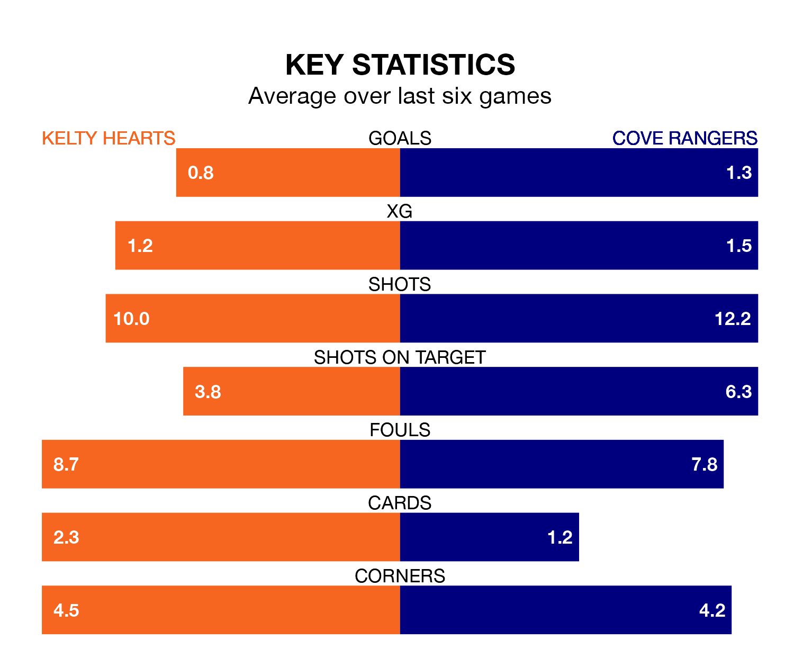

Kelty Hearts welcome Cove Rangers to New Central Park on Saturday looking to pick up points to end their four-game losing streak.
Kelty Hearts's struggles have left them with just four points from their last six League One matches, while their opponents have earned seven from a possible 18.
In Rumarn Burrell, Cove have the league's most on-form striker so far this season. He has notched 19 goals in 28 appearances.
His goal rate of one every 126 minutes is quicker than that of Alfie Bavidge, Kelty Hearts's top scorer with a goal every 223 minutes, and a total of seven goals in 18 games.
With 35 goals in 27 games so far this season, the hosts are the league's third-lowest scorers with 1.3 goals per game. And they are conceding more than average, letting in 48 goals at a rate of 1.8 per game.
Rangers, meanwhile, are average scorers, with 1.6 goals per game. They have conceded 1.5 goals per game.
In the last five years, Kelty Hearts and Cove have played each other on four occasions. They won one each, and they drew twice.
On average, Kelty Hearts scored 1.8 goals and the Wee Rangers 1.8 in those matches.
Their last meeting was on January 6, when they played out a 2-2 draw.
Kelty Hearts are seventh in the table after 27 games, of which they have won eight and drawn seven, earning 31 points.
The Wee Rangers are two places ahead of Kelty Hearts in fifth, with 11 wins and seven draws putting them on 40 points.
Kelty Hearts's last match was on March 9, a 3-0 loss against Alloa Athletic.
Cove lost 4-1 against Montrose last time out, also on March 9, with Connor Scully on the scoresheet.
Updated: 15:10 (UTC), 15/03/24